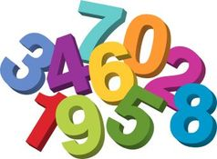

Para efeitos da nota atribuida à resolução de exercícios ao longo do semestre - Submeter até 23:59 de 3 de Abril
(o problema continuará depois disponível para submissão, mas sem contar para a nota)
[para perceber o contexto do problema deve ler o guião da aula #02]
 O Pedro e a Luísa estão a jogar um novo jogo. Um deles escreve uma sequência de números inteiros (positivos ou negativos) e o outro tem de tentar descobrir qual a sequência contígua (um ou mais números consecutivos) que dá origem à maior soma possível.
Imagina por exemplo que a Luísa escolhe a seguinte sequência de números:
-1 4 -2 5 -5 2 -20 6
Alguns exemplos de sequências contíguas seriam as seguintes:
|-1 4 -2 5 -5 2 -20 6| (soma=-11) -1 4 -2 5 -5 |2 -20 6| (soma=-12) |-1 4 -2 5 -5 2|-20 6 (soma=3) -1 4 -2 |5|-5 2 -20 6 (soma=5) -1 |4 -2 5|-5 2 -20 6 (soma=7)
A última destas sequências corresponde precisamente à melhor sequência contígua possivel que o Pedro poderia escolher, ou seja, a que tem maior soma.
Podes ajudar os dois amigos a jogarem este jogo?
Dada uma sequência de N números inteiros, a tua tarefa é calcular a maior soma que uma sequência contígua de um ou mais números da sequência pode formar.
Na primeira linha do input vem um inteiro N, a quantidade de números na sequência.
Depois vem uma outra linha contendo exactamente N números inteiros vi, indicando a sequência a considerar.
O output é constituído por uma única linha contendo a soma máxima de uma subsequência contígua, como atrás descrito.
São garantidos os seguintes limites em todos os casos de teste que irão ser colocados ao programa:
| 1 ≤ N ≤ 200 000 | Quantidade de números | |
| -2000 ≤ vi ≤ 2000 | Os números da sequência |
8 -1 4 -2 5 -5 2 -20 6
7
O exemplo de input corresponde ao exemplo explicado no enunciado do problema.
Desenho e Análise de Algoritmos (CC2001)
DCC/FCUP - Faculdade de Ciências da Universidade do Porto